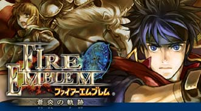
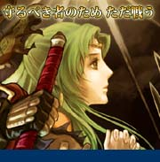
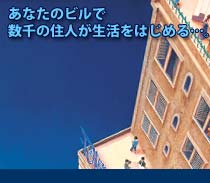
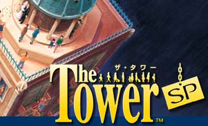
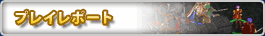

既にゲームにはなじみの深い人。そして新しく面白いゲームを探している人たち。その人々がバランスよく誰でも入り込めるゲームはあるのか？という問いかけに自信を持って応えられるソフトを特集する今月号は、人間ドラマ織りなすロールプレイングシミュレーションの大作『ファイアーエムブレム 蒼炎の軌跡』と、パソコンゲーム時代から脈々とその血筋を伝える『The Tower SP』をご紹介。
どちらもゲームとしての進化を重ねて、よりプレイしやすく、より楽しく、そして「らしさ」を感じさせる貴重なゲームたちです。
『ファイアーエムブレム 蒼炎の軌跡』の特集には、本邦初公開となるキャラクターイラストができるまでの過程や、ラフデザイン画公開などマル秘情報が満載！世界のエムブレムファン垂涎の企画、絶対にお見逃しなく。

ファイアーエムブレム 蒼炎の軌跡
© 2005 Nintendo/INTELLIGENT SYSTEMS
All Rights, including the copyrights of Game, Scenario,
Music and Program, reserved by NINTENDO and INTELLIGENT SYSTEMS.
The Tower SP
©1993-2005 VIVARIUM Inc.
© 2005 Nintendo
>>
2005年5月号のサイトマップへ
>>
N.O.Mのバックナンバーページへ